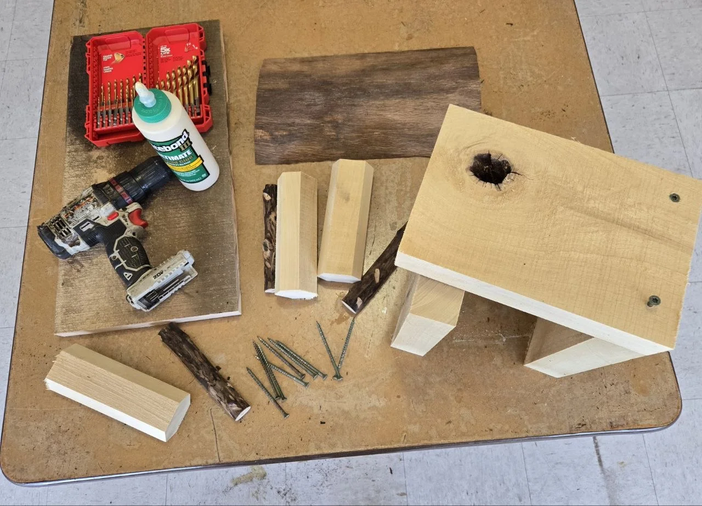
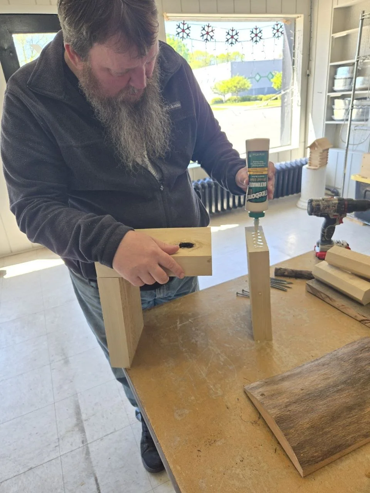
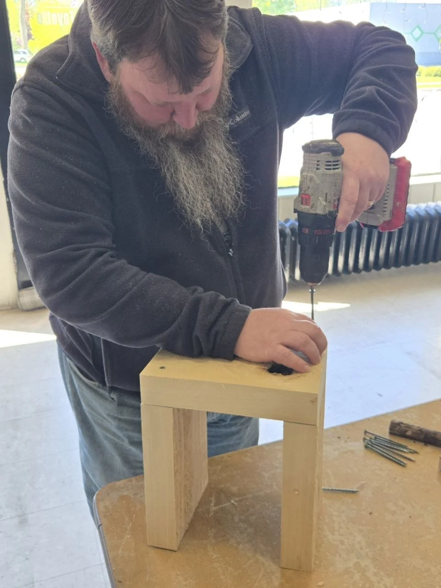
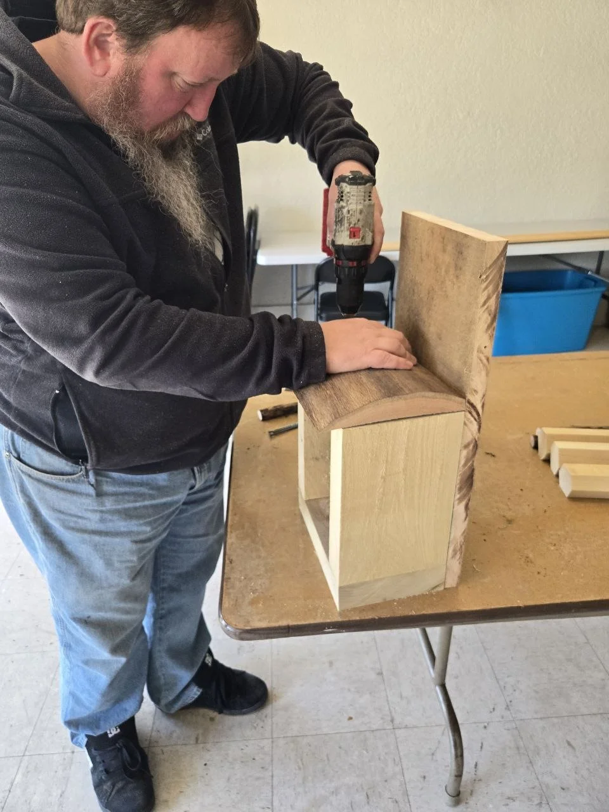
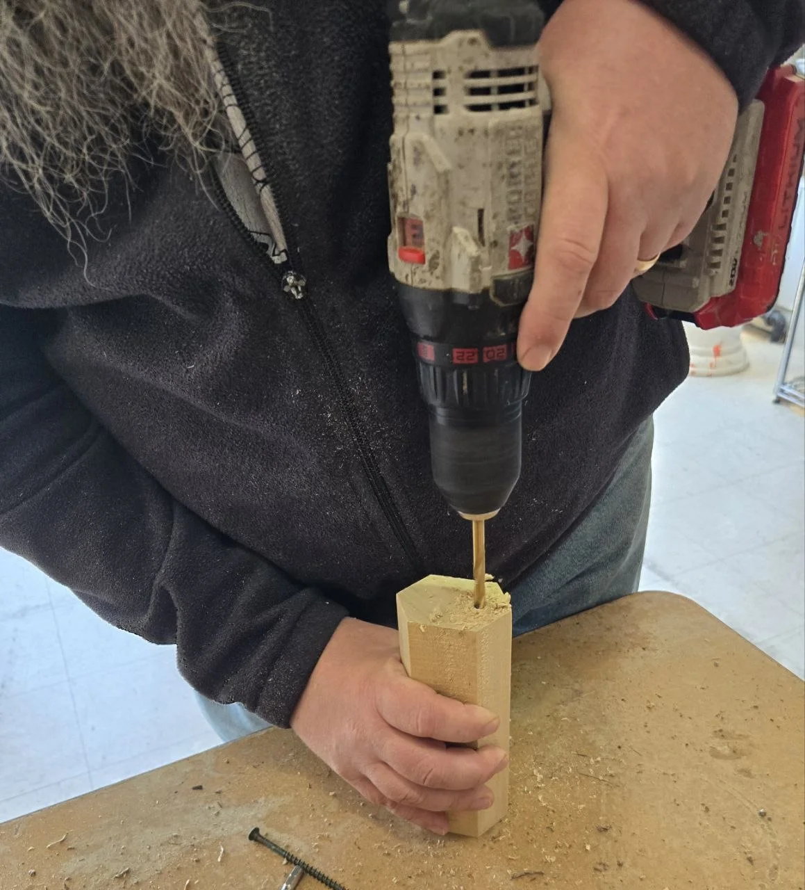
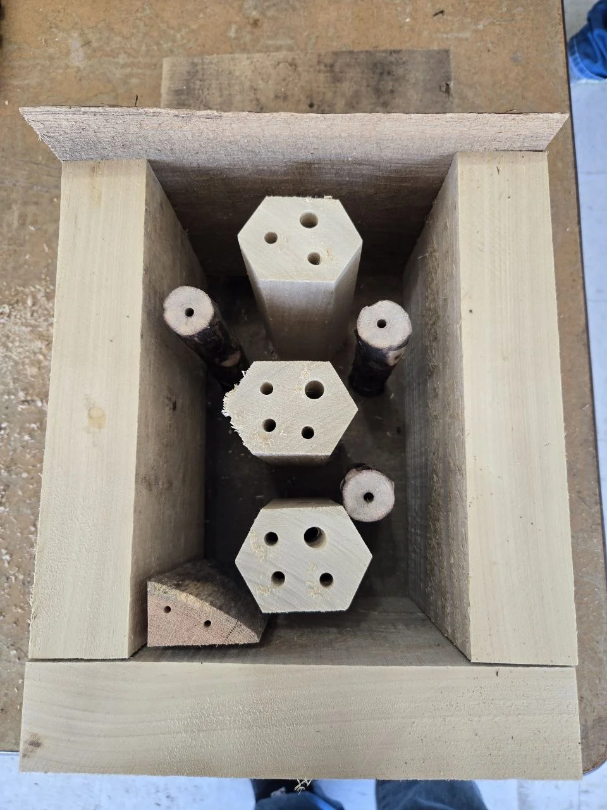
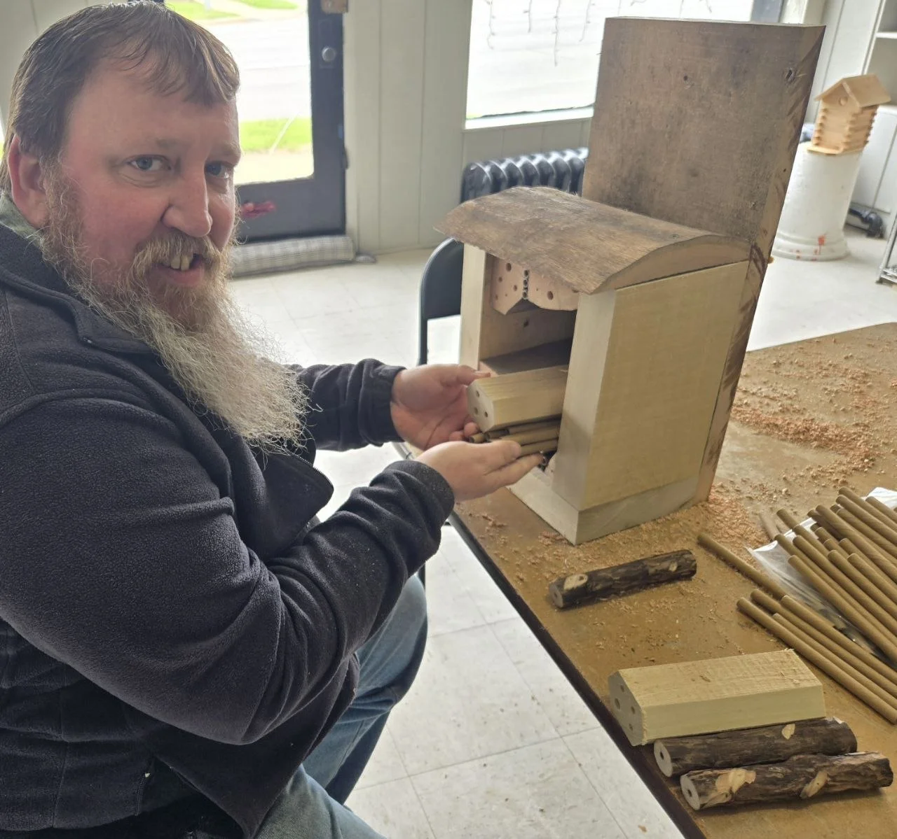
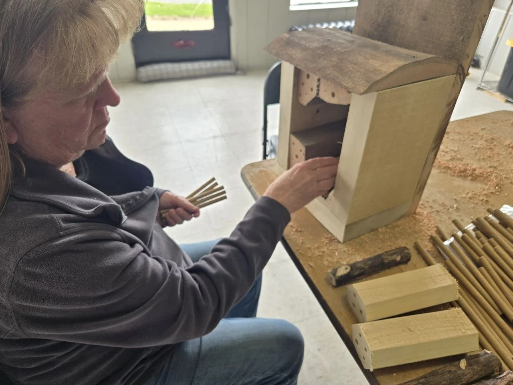

Tiny Backyard Wildlife Builds
That is honestly part of what makes this one fun. You can use a simple outer structure, drill a few different wood blocks, add tubes, mix in a couple rustic pieces, and build something that feels more handmade and personal instead of perfectly factory neat.
We still wanted it to be useful, but this was never meant to be a furniture-grade box with exact row-by-row measurements. It was meant to be a practical, artistic little wildlife project with real personality.
Project snapshot
- more artistic than exact
- good for a rustic backyard or garden space
- built around a simple outer structure plus bee blocks and tubes
- best if you like practical projects with room for personality
What makes this one different
We did not treat this like a rigid blueprint build. We treated it more like a creative wildlife project, build a good outer shell, add drilled blocks and tubes, keep it sheltered, and let the finished piece feel a little rustic and handmade.
What we used

The main parts were simple: a basic outer structure, drilled wood blocks, a backing board, a roof piece, screws, glue, and filler materials.
Basic idea
- build a simple outer box or shelter
- add drilled wood blocks and a few rustic filler pieces
- use bee tubes to fill some of the smaller spaces
- give the whole thing a roof and a dry protected back
We started by building the outer structure
Build box 1

Build box 3

Build box 2

This part was really about getting the shell in place. Once that main body exists, the whole project starts feeling real and you can begin seeing where the bee blocks, tubes, and filler pieces will live.
Then we drilled the nesting blocks
Drill the holes

Rough layout first

Keep this part practical
- use smooth clean holes, not ragged splintery entrances
- mixing a few hole sizes is fine, but do not go wild just to be fancy
- the goal is a dry sheltered nesting space, not random decoration
After that, it turned into more of an artistic assembly project
Assembly 1

Assembly 2

This is where the project really stops being a strict build sequence and starts becoming a fun layout exercise. You can move things around, test combinations, see what looks balanced, and let the finished hotel become its own rustic little piece.
The finished look
What I like about this version is that it feels handmade in the right way. Not sloppy, not sterile, just real. It looks like something that belongs in a backyard that already has projects, gardens, wildlife, feeders, wood, and a little bit of personality.
If we made another one later, we could always change the mix of blocks and tubes, tweak the interior layout, or refine the roof and backing. That is part of the fun with a build like this. It does not need to be frozen into one perfect official pattern forever.
A few good placement and maintenance notes
Where to put it
- mount it somewhere dry and sheltered
- keep it out of constant soaking rain
- place it where it gets some warmth, but not brutal exposure all day
- keep it near flowers and pollinator-friendly plants if you can
What to watch over time
- replace or refresh worn nesting materials when needed
- watch for mold, damage, or moisture problems
- do not treat it like a forever no-maintenance decoration
- keep the bee side of the project practical, not just cute